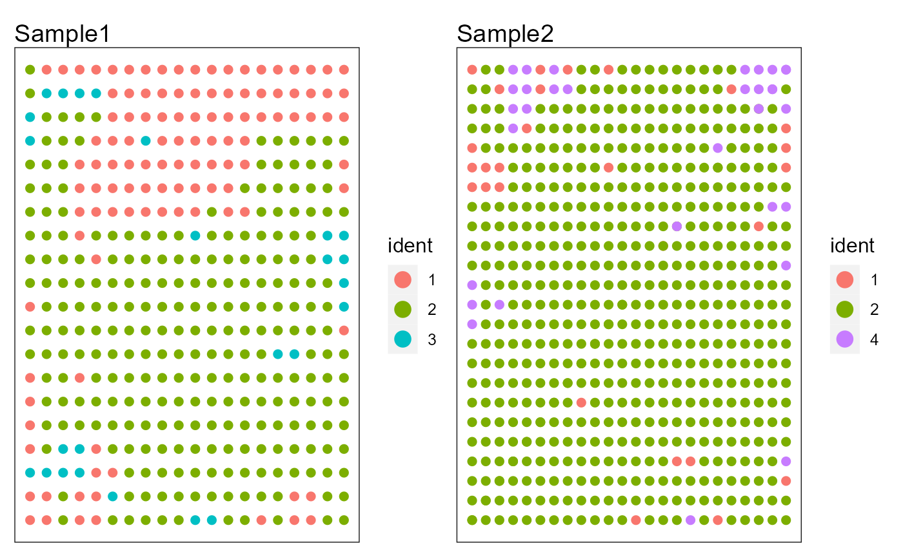
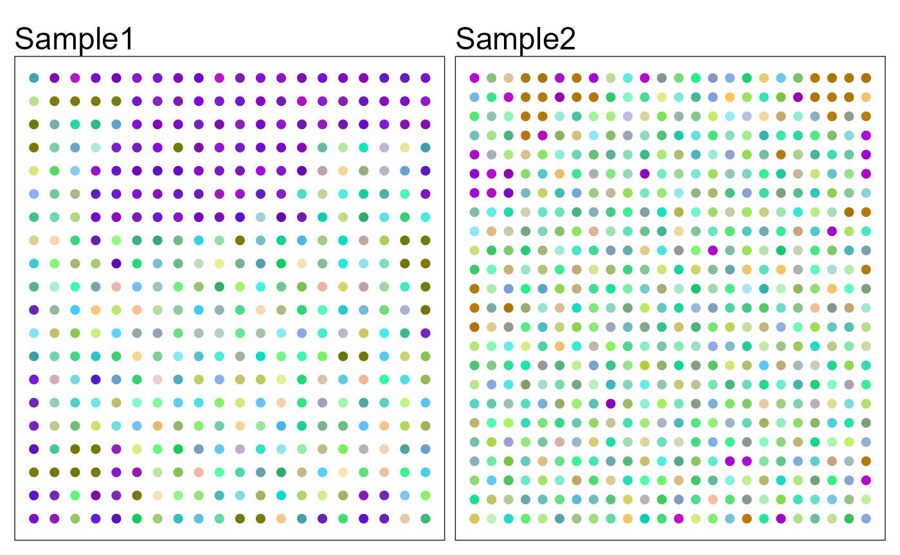
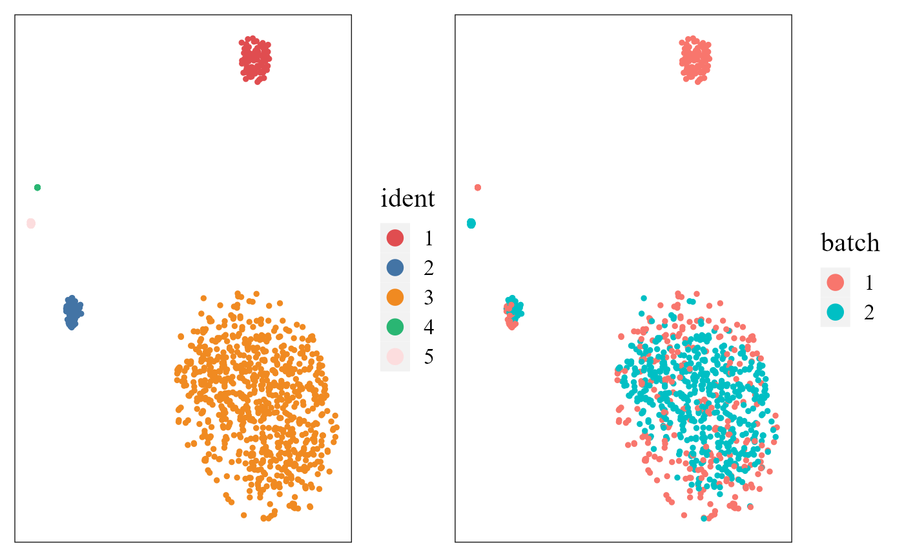
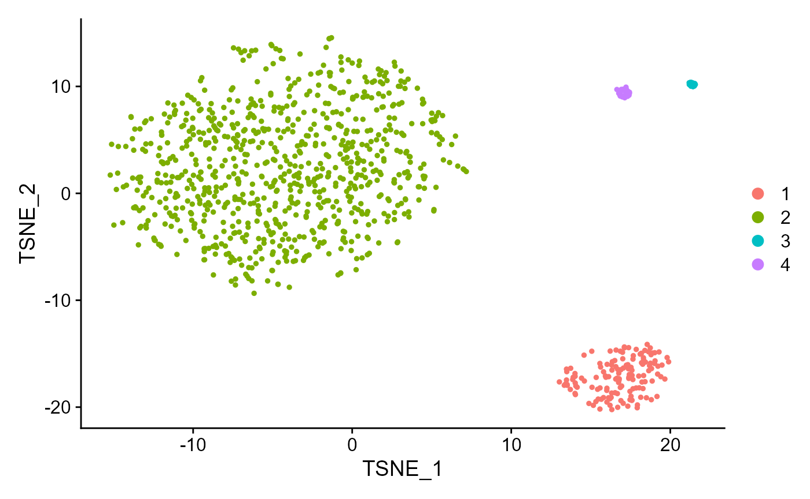
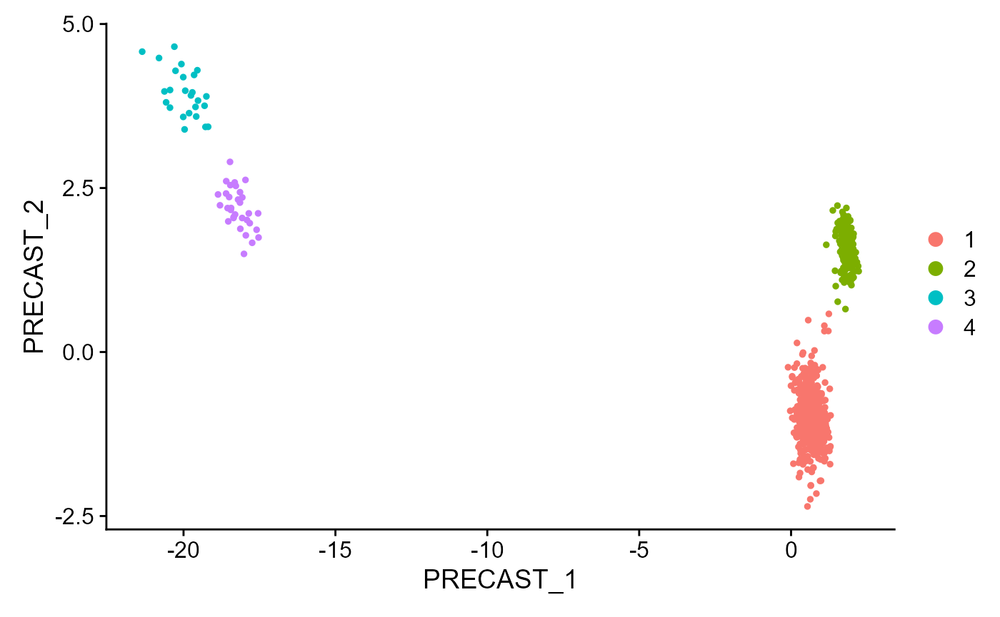

Generate the simulated data
First, we generate the multiple spatial transcriptomics data with lattice neighborhood, i.e. ST platform by using the function gendata_seulist in PRECAST package.
library(Seurat)
#> Warning: package 'Seurat' was built under R version 4.1.3
#> Attaching SeuratObject
#> Attaching sp
library(PRECAST)
#> Loading required package: parallel
#> Loading required package: gtools
seuList <- gendata_seulist(height1=20, width1=20, height2=24, width2=25,p=400, K=4, alpha=10, sigma2=0.1)
seuList
#> [[1]]
#> An object of class Seurat
#> 400 features across 400 samples within 1 assay
#> Active assay: RNA (400 features, 0 variable features)
#> 1 dimensional reduction calculated: trueEmbed
#>
#> [[2]]
#> An object of class Seurat
#> 400 features across 600 samples within 1 assay
#> Active assay: RNA (400 features, 0 variable features)
#> 1 dimensional reduction calculated: trueEmbed
head(seuList[[1]])
#> orig.ident nCount_RNA nFeature_RNA row col true_cluster
#> cell1_1 cell1 3024 225 1 1 2
#> cell1_2 cell1 2230 220 2 1 3
#> cell1_3 cell1 3981 222 3 1 1
#> cell1_4 cell1 2630 215 4 1 2
#> cell1_5 cell1 2367 231 5 1 2
#> cell1_6 cell1 4098 222 6 1 1
#> cell1_7 cell1 4212 222 7 1 1
#> cell1_8 cell1 3280 229 8 1 1
#> cell1_9 cell1 3011 216 9 1 1
#> cell1_10 cell1 2747 235 10 1 1
## Must include the columns named "row" and "col" for saving the spatial coordinatesFit PRECAST using simulated data
Prepare the PRECASTObject with preprocessing step.
## Create
PRECASTObj <- CreatePRECASTObject(seuList)
#> Filter spots and features from Raw count data...
#>
#>
#> Find the spatially variables genes by SPARK-X...
#> ## ===== SPARK-X INPUT INFORMATION ====
#> ## number of total samples: 400
#> ## number of total genes: 366
#> ## Running with single core, may take some time
#> ## Testing With Projection Kernel
#> ## Testing With Gaussian Kernel 1
#> ## Testing With Gaussian Kernel 2
#> ## Testing With Gaussian Kernel 3
#> ## Testing With Gaussian Kernel 4
#> ## Testing With Gaussian Kernel 5
#> ## Testing With Cosine Kernel 1
#> ## Testing With Cosine Kernel 2
#> ## Testing With Cosine Kernel 3
#> ## Testing With Cosine Kernel 4
#> ## Testing With Cosine Kernel 5
#> Find the spatially variables genes by SPARK-X...
#> ## ===== SPARK-X INPUT INFORMATION ====
#> ## number of total samples: 600
#> ## number of total genes: 379
#> ## Running with single core, may take some time
#> ## Testing With Projection Kernel
#> ## Testing With Gaussian Kernel 1
#> ## Testing With Gaussian Kernel 2
#> ## Testing With Gaussian Kernel 3
#> ## Testing With Gaussian Kernel 4
#> ## Testing With Gaussian Kernel 5
#> ## Testing With Cosine Kernel 1
#> ## Testing With Cosine Kernel 2
#> ## Testing With Cosine Kernel 3
#> ## Testing With Cosine Kernel 4
#> ## Testing With Cosine Kernel 5
#> Warning in FUN(X[[i]], ...): Only 366 SVGs will be returned since the number of genes is less than 2000
#> Warning in FUN(X[[i]], ...): Only 379 SVGs will be returned since the number of genes is less than 2000
#> Warning in CreatePRECASTObject(seuList): Number of SVGs in one of sample is less
#> than 2000, so set minimum number of SVGs as gene.number=366
#> Select common SVGs for multiple samples...
#> Filter spots and features from SVGs count data...Add the model setting
## check the number of genes/features after filtering step
PRECASTObj@seulist
#> [[1]]
#> An object of class Seurat
#> 348 features across 400 samples within 1 assay
#> Active assay: RNA (348 features, 348 variable features)
#> 1 dimensional reduction calculated: trueEmbed
#>
#> [[2]]
#> An object of class Seurat
#> 348 features across 600 samples within 1 assay
#> Active assay: RNA (348 features, 348 variable features)
#> 1 dimensional reduction calculated: trueEmbed
## Add adjacency matrix list for a PRECASTObj object to prepare for PRECAST model fitting.
PRECASTObj <- AddAdjList(PRECASTObj, platform = "ST")
#> Neighbors were identified for 400 out of 400 spots.
#> Neighbors were identified for 600 out of 600 spots.
## Add a model setting in advance for a PRECASTObj object. verbose =TRUE helps outputing the information in the algorithm.
PRECASTObj <- AddParSetting(PRECASTObj, Sigma_equal=FALSE, maxIter=30, verbose=TRUE)Fit PRECAST
For function PRECAST, users can specify the number of clusters \(K\) or set K to be an integer vector by using modified BIC(MBIC) to determine \(K\). First, we try using user-specified number of clusters. For convenience, we give a single K here.
### Given K
PRECASTObj <- PRECAST(PRECASTObj, K=4)
#> Intergrative data info.: 2 samples, 348 genes X 1000 spots------
#> PRECAST model setting: error_heter=TRUE, Sigma_equal=FALSE, Sigma_diag=TRUE, mix_prop_heter=TRUE
#> Start computing intial values...
#> fitting ...
#>
|
| | 0%
|
|=================================== | 50%
|
|======================================================================| 100%
#> ----Fitting PRECAST model----------------
#> variable initialize finish!
#> predict Y and V!
#> diff Energy = 0.103225
#> Finish ICM step!
#> iter = 2, loglik= 76227.562500, dloglik=1.000035
#> predict Y and V!
#> diff Energy = 3.618338
#> Finish ICM step!
#> iter = 3, loglik= 83311.125000, dloglik=0.092927
#> predict Y and V!
#> diff Energy = 0.753559
#> diff Energy = 0.079758
#> Finish ICM step!
#> iter = 4, loglik= 84979.523438, dloglik=0.020026
#> predict Y and V!
#> diff Energy = 1.262075
#> Finish ICM step!
#> iter = 5, loglik= 85735.000000, dloglik=0.008890
#> predict Y and V!
#> diff Energy = 3.770197
#> diff Energy = 0.931205
#> Finish ICM step!
#> iter = 6, loglik= 86175.937500, dloglik=0.005143
#> predict Y and V!
#> Finish ICM step!
#> iter = 7, loglik= 86484.828125, dloglik=0.003584
#> predict Y and V!
#> Finish ICM step!
#> iter = 8, loglik= 86717.765625, dloglik=0.002693
#> predict Y and V!
#> Finish ICM step!
#> iter = 9, loglik= 86876.679688, dloglik=0.001833
#> predict Y and V!
#> Finish ICM step!
#> iter = 10, loglik= 87002.531250, dloglik=0.001449
#> predict Y and V!
#> Finish ICM step!
#> iter = 11, loglik= 87100.125000, dloglik=0.001122
#> predict Y and V!
#> Finish ICM step!
#> iter = 12, loglik= 87177.742188, dloglik=0.000891
#> predict Y and V!
#> Finish ICM step!
#> iter = 13, loglik= 87241.570312, dloglik=0.000732
#> predict Y and V!
#> Finish ICM step!
#> iter = 14, loglik= 87293.453125, dloglik=0.000595
#> predict Y and V!
#> Finish ICM step!
#> iter = 15, loglik= 87336.070312, dloglik=0.000488
#> predict Y and V!
#> Finish ICM step!
#> iter = 16, loglik= 87371.421875, dloglik=0.000405
#> predict Y and V!
#> Finish ICM step!
#> iter = 17, loglik= 87400.945312, dloglik=0.000338
#> predict Y and V!
#> Finish ICM step!
#> iter = 18, loglik= 87425.757812, dloglik=0.000284
#> predict Y and V!
#> Finish ICM step!
#> iter = 19, loglik= 87446.726562, dloglik=0.000240
#> predict Y and V!
#> Finish ICM step!
#> iter = 20, loglik= 87464.546875, dloglik=0.000204
#> predict Y and V!
#> diff Energy = 0.741400
#> Finish ICM step!
#> iter = 21, loglik= 87479.015625, dloglik=0.000165
#> predict Y and V!
#> diff Energy = 1.302642
#> Finish ICM step!
#> iter = 22, loglik= 87487.617188, dloglik=0.000098
#> predict Y and V!
#> Finish ICM step!
#> iter = 23, loglik= 87498.242188, dloglik=0.000121
#> predict Y and V!
#> Finish ICM step!
#> iter = 24, loglik= 87513.078125, dloglik=0.000170
#> predict Y and V!
#> diff Energy = 0.704982
#> Finish ICM step!
#> iter = 25, loglik= 87521.445312, dloglik=0.000096
#> predict Y and V!
#> Finish ICM step!
#> iter = 26, loglik= 87535.031250, dloglik=0.000155
#> predict Y and V!
#> Finish ICM step!
#> iter = 27, loglik= 87548.132812, dloglik=0.000150
#> predict Y and V!
#> Finish ICM step!
#> iter = 28, loglik= 87553.265625, dloglik=0.000059
#> predict Y and V!
#> Finish ICM step!
#> iter = 29, loglik= 87558.023438, dloglik=0.000054
#> predict Y and V!
#> Finish ICM step!
#> iter = 30, loglik= 87562.031250, dloglik=0.000046Select a best model and use ARI to check the performance of clustering
## backup the fitting results in resList
resList <- PRECASTObj@resList
# PRECASTObj@resList <- resList
PRECASTObj <- selectModel(PRECASTObj)
true_cluster <- lapply(seuList, function(x) x$true_cluster)
str(true_cluster)
#> List of 2
#> $ : Named num [1:400] 2 3 1 2 2 1 1 1 1 1 ...
#> ..- attr(*, "names")= chr [1:400] "cell1_1" "cell1_2" "cell1_3" "cell1_4" ...
#> $ : Named num [1:600] 3 3 3 1 1 1 1 1 1 1 ...
#> ..- attr(*, "names")= chr [1:600] "cell2_1" "cell2_2" "cell2_3" "cell2_4" ...
mclust::adjustedRandIndex(unlist(PRECASTObj@resList$cluster), unlist(true_cluster))
#> [1] 0.932775Integrate the two samples by the function IntegrateSpaData.
seuInt <- IntegrateSpaData(PRECASTObj, species='unknown')
#> Using only PRECAST results to obtain the batch corrected gene expressions
#> since species is unkown or the genelist in PRECASTObj has less than 5 overlapp
#> with the housekeeping genes of given species.
#> Users can specify the custom_housekeep by themselves to use the housekeeping genes based methods.
seuInt
#> An object of class Seurat
#> 348 features across 1000 samples within 1 assay
#> Active assay: PRE_CAST (348 features, 0 variable features)
#> 2 dimensional reductions calculated: PRECAST, position
## The low-dimensional embeddings obtained by PRECAST are saved in PRECAST reduction slot.Show the spatial scatter plot for clusters
p12 <- SpaPlot(seuInt, batch=NULL,point_size=2, combine=TRUE)
p12
# users can plot each sample by setting combine=FALSEShow the spatial UMAP/tNSE RGB plot
seuInt <- AddUMAP(seuInt)
SpaPlot(seuInt, batch=NULL,item='RGB_UMAP',point_size=2, combine=TRUE, text_size=15)
#seuInt <- AddTSNE(seuInt)
#SpaPlot(seuInt, batch=NULL,item='RGB_TSNE',point_size=2, combine=T, text_size=15)Show the tSNE plot based on the extracted features from PRECAST to check the performance of integration.
seuInt <- AddTSNE(seuInt, n_comp = 2)
library(patchwork)
cols_cluster <- c("#E04D50", "#4374A5", "#F08A21","#2AB673", "#FCDDDE", "#70B5B0", "#DFE0EE" ,"#D0B14C")
p1 <- dimPlot(seuInt, font_family='serif', cols=cols_cluster) # Times New Roman
p2 <- dimPlot(seuInt, item='batch', point_size = 1, font_family='serif')
p1 + p2 
# It is noted that only sample batch 1 has cluster 4, and only sample batch 2 has cluster 7. Show the UMAP plot based on the extracted features from PRECAST.
dimPlot(seuInt, reduction = 'UMAP3', item='cluster', cols=cols_cluster, font_family='serif')
Users can also use the visualization functions in Seurat package:
DimPlot(seuInt, reduction = 'position')
DimPlot(seuInt, reduction = 'tSNE')
DimPlot(seuInt, reduction = 'PRECAST')
Combined differential expression analysis
dat_deg <- FindAllMarkers(seuInt)
#> Calculating cluster 1
#> Calculating cluster 2
#> Calculating cluster 3
#> Calculating cluster 4
library(dplyr)
#> Warning: package 'dplyr' was built under R version 4.1.3
#>
#> Attaching package: 'dplyr'
#> The following objects are masked from 'package:stats':
#>
#> filter, lag
#> The following objects are masked from 'package:base':
#>
#> intersect, setdiff, setequal, union
n <- 10
dat_deg %>%
group_by(cluster) %>%
top_n(n = n, wt = avg_log2FC) -> top10
seuInt <- ScaleData(seuInt)
#> Centering and scaling data matrix
seus <- subset(seuInt, downsample = 400)
color_id <- as.numeric(levels(Idents(seus)))
library(ggplot2)
#> Warning: package 'ggplot2' was built under R version 4.1.3
## HeatMap
p1 <- doHeatmap(seus, features = top10$gene, cell_label= "Domain",
grp_label = F, grp_color = cols_cluster,
pt_size=6,slot = 'scale.data') +
theme(legend.text = element_text(size=16),
legend.title = element_text(size=18, face='bold'),
axis.text.y = element_text(size=7, face= "italic", family='serif'))
p1
Session information
sessionInfo()
#> R version 4.1.2 (2021-11-01)
#> Platform: x86_64-w64-mingw32/x64 (64-bit)
#> Running under: Windows 10 x64 (build 22000)
#>
#> Matrix products: default
#>
#> locale:
#> [1] LC_COLLATE=English_Singapore.1252 LC_CTYPE=English_Singapore.1252
#> [3] LC_MONETARY=English_Singapore.1252 LC_NUMERIC=C
#> [5] LC_TIME=English_Singapore.1252
#> system code page: 936
#>
#> attached base packages:
#> [1] parallel stats graphics grDevices utils datasets methods
#> [8] base
#>
#> other attached packages:
#> [1] ggplot2_3.3.6 dplyr_1.0.9 patchwork_1.1.1 PRECAST_1.2
#> [5] gtools_3.9.2.2 sp_1.5-0 SeuratObject_4.1.0 Seurat_4.1.1
#>
#> loaded via a namespace (and not attached):
#> [1] utf8_1.2.2 reticulate_1.25
#> [3] tidyselect_1.1.2 htmlwidgets_1.5.4
#> [5] grid_4.1.2 BiocParallel_1.28.3
#> [7] Rtsne_0.16 munsell_0.5.0
#> [9] ScaledMatrix_1.2.0 codetools_0.2-18
#> [11] ragg_1.2.2 ica_1.0-2
#> [13] future_1.26.1 miniUI_0.1.1.1
#> [15] withr_2.5.0 spatstat.random_2.2-0
#> [17] colorspace_2.0-3 progressr_0.10.1
#> [19] Biobase_2.54.0 highr_0.9
#> [21] knitr_1.37 rstudioapi_0.13
#> [23] stats4_4.1.2 SingleCellExperiment_1.16.0
#> [25] ROCR_1.0-11 tensor_1.5
#> [27] listenv_0.8.0 labeling_0.4.2
#> [29] MatrixGenerics_1.6.0 GenomeInfoDbData_1.2.7
#> [31] polyclip_1.10-0 farver_2.1.0
#> [33] rprojroot_2.0.3 parallelly_1.32.0
#> [35] vctrs_0.4.1 generics_0.1.2
#> [37] xfun_0.29 ggthemes_4.2.4
#> [39] R6_2.5.1 GenomeInfoDb_1.30.1
#> [41] ggbeeswarm_0.6.0 rsvd_1.0.5
#> [43] bitops_1.0-7 spatstat.utils_2.3-1
#> [45] cachem_1.0.6 DelayedArray_0.20.0
#> [47] assertthat_0.2.1 promises_1.2.0.1
#> [49] scales_1.2.0 rgeos_0.5-9
#> [51] beeswarm_0.4.0 gtable_0.3.0
#> [53] beachmat_2.10.0 globals_0.15.0
#> [55] goftest_1.2-3 rlang_1.0.2
#> [57] systemfonts_1.0.4 splines_4.1.2
#> [59] lazyeval_0.2.2 spatstat.geom_2.4-0
#> [61] yaml_2.3.5 reshape2_1.4.4
#> [63] abind_1.4-5 httpuv_1.6.5
#> [65] tools_4.1.2 ellipsis_0.3.2
#> [67] spatstat.core_2.4-4 jquerylib_0.1.4
#> [69] RColorBrewer_1.1-3 BiocGenerics_0.40.0
#> [71] ggridges_0.5.3 Rcpp_1.0.8.3
#> [73] plyr_1.8.7 sparseMatrixStats_1.6.0
#> [75] zlibbioc_1.40.0 purrr_0.3.4
#> [77] RCurl_1.98-1.6 rpart_4.1.16
#> [79] deldir_1.0-6 viridis_0.6.2
#> [81] pbapply_1.5-0 cowplot_1.1.1
#> [83] S4Vectors_0.32.3 zoo_1.8-10
#> [85] SummarizedExperiment_1.24.0 ggrepel_0.9.1
#> [87] cluster_2.1.2 fs_1.5.2
#> [89] magrittr_2.0.3 GiRaF_1.0.1
#> [91] data.table_1.14.2 scattermore_0.8
#> [93] lmtest_0.9-40 RANN_2.6.1
#> [95] fitdistrplus_1.1-8 matrixStats_0.62.0
#> [97] mime_0.12 evaluate_0.15
#> [99] xtable_1.8-4 mclust_5.4.10
#> [101] IRanges_2.28.0 gridExtra_2.3
#> [103] compiler_4.1.2 scater_1.25.1
#> [105] tibble_3.1.7 KernSmooth_2.23-20
#> [107] crayon_1.5.1 htmltools_0.5.2
#> [109] mgcv_1.8-39 later_1.3.0
#> [111] tidyr_1.2.0 DBI_1.1.2
#> [113] MASS_7.3-55 Matrix_1.4-0
#> [115] cli_3.2.0 igraph_1.3.2
#> [117] DR.SC_2.9 GenomicRanges_1.46.1
#> [119] pkgconfig_2.0.3 pkgdown_2.0.2
#> [121] plotly_4.10.0 scuttle_1.4.0
#> [123] spatstat.sparse_2.1-1 vipor_0.4.5
#> [125] bslib_0.3.1 XVector_0.34.0
#> [127] CompQuadForm_1.4.3 stringr_1.4.0
#> [129] digest_0.6.29 sctransform_0.3.3
#> [131] RcppAnnoy_0.0.19 spatstat.data_2.2-0
#> [133] rmarkdown_2.11 leiden_0.4.2
#> [135] uwot_0.1.11 DelayedMatrixStats_1.16.0
#> [137] shiny_1.7.1 lifecycle_1.0.1
#> [139] nlme_3.1-155 jsonlite_1.8.0
#> [141] BiocNeighbors_1.12.0 limma_3.50.1
#> [143] desc_1.4.0 viridisLite_0.4.0
#> [145] fansi_1.0.3 pillar_1.7.0
#> [147] lattice_0.20-45 fastmap_1.1.0
#> [149] httr_1.4.3 survival_3.2-13
#> [151] glue_1.6.2 png_0.1-7
#> [153] stringi_1.7.6 sass_0.4.1
#> [155] textshaping_0.3.6 BiocSingular_1.10.0
#> [157] memoise_2.0.1 irlba_2.3.5
#> [159] future.apply_1.9.0